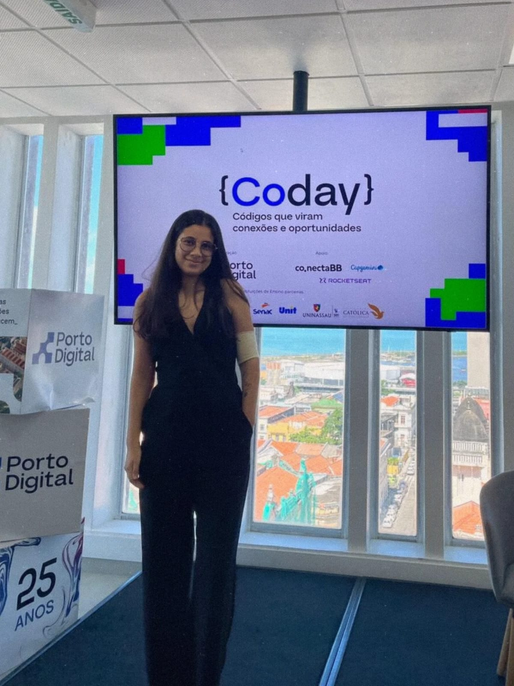

Portfólio · IA para Negócios
Eduardha Lima
AI Builder que transforma ideias de negócio em soluções reais — com olhar de qualidade, cabeça de produto e o sonho de liderar projetos.

Prazer, Eduardha
Curiosa por natureza, construtora por escolha.
Estudo Análise e Desenvolvimento de Sistemas na FICR, pelo Embarque Digital, e descobri que o que me move é ver uma ideia sair do papel e ajudar pessoas de verdade.
- Começo pelo problema, não pela ferramenta.
- Uso a IA como parceira para entregar mais rápido e com qualidade.
- Gosto de gente, de organização e de ver o time chegando junto ao resultado.
O que eu entrego
Meu valor em seis frentes
Automações
Fluxos com IA que tiram o trabalho repetitivo do caminho do time.
Produtos do zero
Da ideia ao sistema funcionando, em dias ou semanas.
Dados que decidem
Painéis e relatórios que viram decisão, não só gráfico.
Qualidade
Requisitos claros, testes e cuidado com cada detalhe.
Uso consciente de tokens
IA com custo sob controle: o modelo certo, o prompt enxuto e nada de desperdício.
Ética profissional
Transparência, respeito aos dados e responsabilidade em cada entrega.
Caso 01 · Solução para RH
BeneCore
Residência Tecnológica · Porto Digital (Rise Up) · fev–jun 2026 · Squad 3
- Problema: triagem e gestão de benefícios de RH feitas à mão, espalhadas e sem rastreabilidade.
- Solução: automação de benefícios no ServiceNow, com Table Builder, Flow Designer, Decision Tables, ACLs e Report Designer.
- Meu papel: desenvolvedora do squad: modelagem, fluxos, regras de negócio e o pitch final.
Principais entregas
- Modelagem dos dados com Table Builder
- Automações de ponta a ponta com Flow Designer
- Regras de negócio configuradas em Decision Tables
- Controle de acesso e aprovações com ACLs
- Dashboards de acompanhamento com Report Designer
- Estruturei e apresentei o pitch no CODAY
Caso 02 · IA no dia a dia
Qualidade com IA ao lado
Technical Assistant in QA · CESAR · nov 2025 – hoje
- Contexto: apoio técnico a times de Software, QA, Design e Dados, com inglês técnico na rotina, porém alocada no time de QA.
- Como: IA Generativa para criar cenários de teste, analisar requisitos e acelerar validações.
- Visão de negócio: Shift-Left Testing: cada falha encontrada cedo é um risco evitado lá na frente.
Principais entregas
- Testes manuais e automatizados
- Testes de API com Postman, Insomnia e Bruno
- Análise e acompanhamento de requisitos e entregas
- Registro e rastreio de inconsistências até a correção
- Documentação e alinhamento em inglês técnico
- Ponte entre áreas para resolver problemas juntos
Caso 03 · Do zero em 3 semanas
Gestão de tarefas completa: TaskInsight
Formação Full Stack · CESAR + Télos (Inova.ação PCD) · 640 horas
- Desafio: projeto final da formação: um sistema real, com prazo curto e escopo apertado.
- Entrega: um sistema completo de gerenciamento de tarefas, do banco de dados à tela, com consciente da IA.
- Como: planejar o escopo, priorizar o essencial, construir e testar em ciclos curtos.
Principais entregas
- Levantamento de requisitos e definição do escopo
- Modelagem e criação do banco de dados
- Desenvolvimento das telas e regras do sistema
- IA como parceira para acelerar código e revisão
- Testes antes de cada entrega
- Apresentação do sistema final a banca
Caso 04 · Educação + tecnologia
Educaminho
Residência Tecnológica · Porto Digital (Kick Off) · ago–dez 2025 · foco nas ODS
- Problema: pouco interesse dos estudantes por Geografia e História e distância da própria cidade.
- Solução: app de mapa interativo com geolocalização, gamificação e aprendizagem ativa.
- Meu papel: trouxe o olhar da Educação para o produto e ajudei a montar o pitch.
Principais entregas
- MVP desenhado no Figma
- Proposta de mapa interativo com geolocalização
- Mecânicas de gamificação para engajar estudantes
- IA como apoio na produção do conteúdo
- Estruturação do pitch e apresentação da solução
- Protótipo funcional a partir de um problema real
O que me forma
Estudo, prática e propósito
Educação
- Análise e Desenvolvimento de Sistemas — FICR (Embarque Digital)
- 3º período · formatura prevista 2027.2
Cursos & formações
- Formação Full Stack — CESAR + Télos
- Technology Residency — CESAR
- Residência Tecnológica — Porto Digital
- Bootcamp de QA — Atlântico Avanti
- Automação com n8n e Agentes de IA com n8n — Rocketseat
Liderança & voluntariado
Vice-representante de turma, Jovem Protagonista no ICE (3 anos) e voluntária de Marketing e Engajamento na Manas Tech. Facilito, organizo e conecto pessoas.
Produto & requisito
Do QA aprendi a traduzir negócio em requisito testável — e requisito em entrega.
Ágil na prática
Scrum, Kanban e cultura DevOps vividos em times reais, não só em sala.
IA no dia a dia
Automações e agentes de IA aplicados no trabalho real, do teste à entrega.
Para onde vou
AI Builder é minha porta de entrada.
Qualidade & Requisitos
Entender o que precisa ser feito e como desenvolver.
AI Builder
Construir de ponta a ponta com IA, com conciência de gasto, ética e novos aprendizados.
Gerente de Projetos
Liderar pessoas e entregas que geram valor com IA mediante avanços tecnologicos futuros.
Quem constrói sabe estimar, priorizar e conversar com todos os lados. É essa gerente que eu quero ser.
Ferramentas & contato